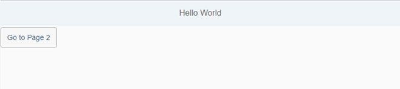
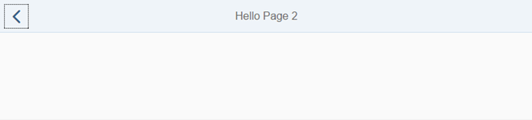

“Hello World!”
With this tutorial, you learn how to create a simple first app in a few steps on a single HTML page.
We create an app with two pages and a navigation button to navigate between the pages.
Preview

Simple "Hello World" App - First Page
Simple "Hello World" App - Second PageCoding
In the following steps, we will create an index.html file with the code below. If you directly want to try the app, just copy and paste the code from here.
You can also launch this mini application and modify the code by creating a jsbin example at https://jsbin.com .
.
<!DOCTYPE html>
<html>
<head>
<meta http-equiv="X-UA-Compatible" content="IE=edge">
<meta charset="utf-8">
<title>Hello World App</title>
<script src="http://<<server>>:<<port>>/resources/sap-ui-core.js"
id="sap-ui-bootstrap"
data-sap-ui-theme="sap_belize"
data-sap-ui-libs="sap.m">
</script>
<script type="text/javascript">
sap.ui.getCore().attachInit(function () {
// create a mobile app and display page1 initially
var app = new sap.m.App("myApp", {
initialPage: "page1"
});
// create the first page
var page1 = new sap.m.Page("page1", {
title : "Hello World",
showNavButton : false,
content : new sap.m.Button({
text : "Go to Page 2",
press : function () {
// navigate to page2
app.to("page2");
}
})
});
// create the second page with a back button
var page2 = new sap.m.Page("page2", {
title : "Hello Page 2",
showNavButton : true,
navButtonPress : function () {
// go back to the previous page
app.back();
}
});
// add both pages to the app
app.addPage(page1).addPage(page2);
// place the app into the HTML document
app.placeAt("content");
});
</script>
</head>
<body class="sapUiBody" id="content">
</body>
</html>